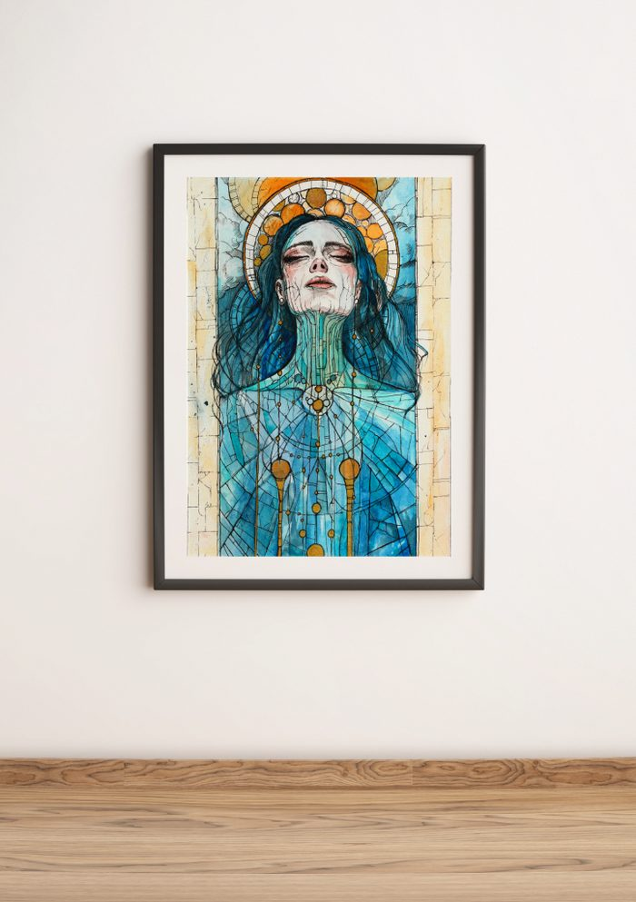
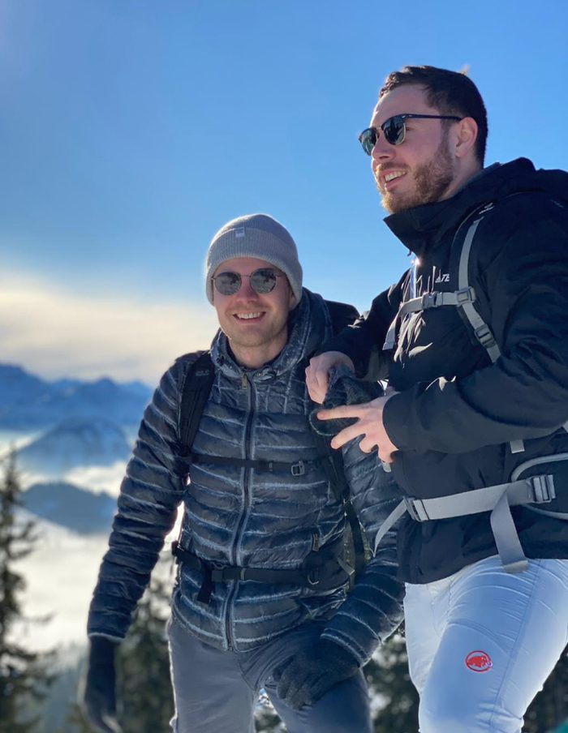
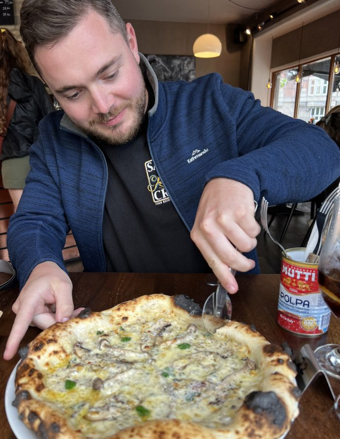

Nutzerzentriert
Ausrichtung auf Bedürfnisse, Erwartungen und Erfahrungen der Nutzer.
01 | Kurzvorstellung
Mein Name ist Tim Eibl – ich bin studierter Kommunikationsdesigner (B.A.) mit Schwerpunkt in Service Design / UI/UX Design aus Augsburg.
In den letzten sechseinhalb Jahren habe ich in einer Werbe- und einer Digitalagentur (weiskind GmbH, TEAM23 GmbH) als Projektmanager, Service Designer und UI/UX Designer gearbeitet. Mit meinem Blick für Struktur und Nutzerbedürfnisse entwickle ich durchdachte, klare und nutzerzentrierte Lösungen.
Ich bringe fundierte Expertise im Bereich Design-Systeme mit: vom Aufbau und der Weiterentwicklung skalierbarer Komponentenbibliotheken über die Definition von UI-Standards bis hin zu Dokumentation und Governance – damit Design über Produkte und Teams hinweg konsistent, effizient und langfristig wartbar bleibt.
Darüber hinaus verbinde ich als zertifizierter Scrum Product Owner diese gestalterische Perspektive mit agilen Methoden, um Ideen strukturiert, effizient und konsequent auf den Mehrwert ausgerichtet umzusetzen.
02 | Skillset & Toolset
Service- / Digital-Product-Design: Service Design und User Experience als ein durchgängiger Prozess.
Ausrichtung auf Bedürfnisse, Erwartungen und Erfahrungen der Nutzer.
Aufteilung des Service in zeitliche Phasen (Customer Journey).
Einbindung aller Stakeholder (Kund*innen, Mitarbeitende, Partner) in den Gestaltungsprozess.
Sichtbarmachen immaterieller Serviceelemente (z. B. durch Artefakte, Touchpoints).
Betrachtung des gesamten Ökosystems (Frontstage & Backstage).
Archetypen üblicher Nutzergruppen.
Visualisierung der Kundenerfahrung über alle Kontaktpunkte.
Darstellung der sichtbaren und unsichtbaren Prozesse eines Services.
Stakeholder Maps, UI Prototyping, Storyboards, Workshops.
Design-Systeme, Prototyping, User Journey Mapping, …
Claude, ChatGPT, Microsoft Copilot, n8n, Agentic AI, Figma Make
Workshops, kollaborativer Austausch
Projektmanagement, Dokumentation
Photoshop, Illustrator, InDesign, …
PowerPoint, Excel, Word
04 | Über mich


